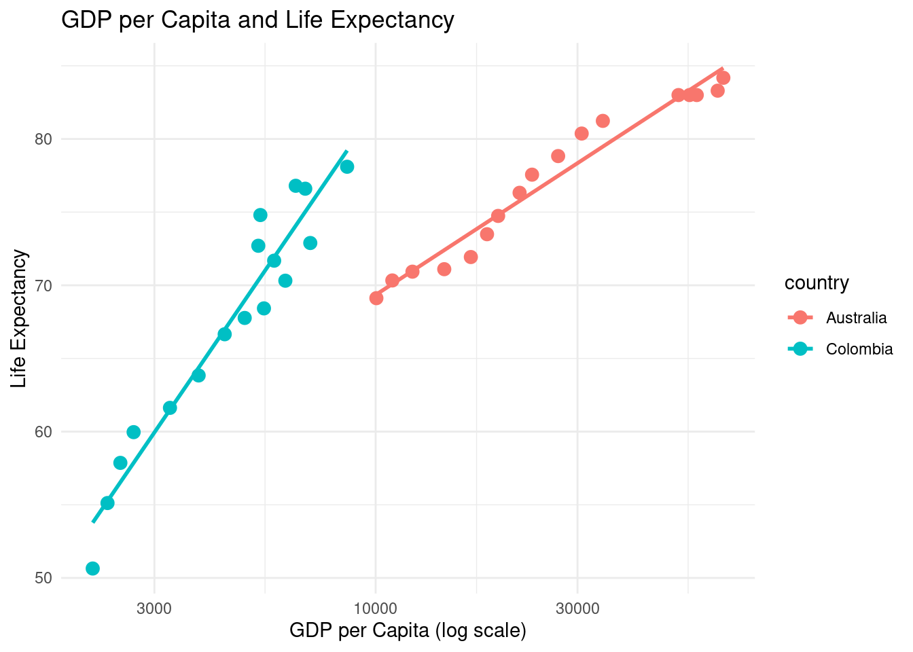
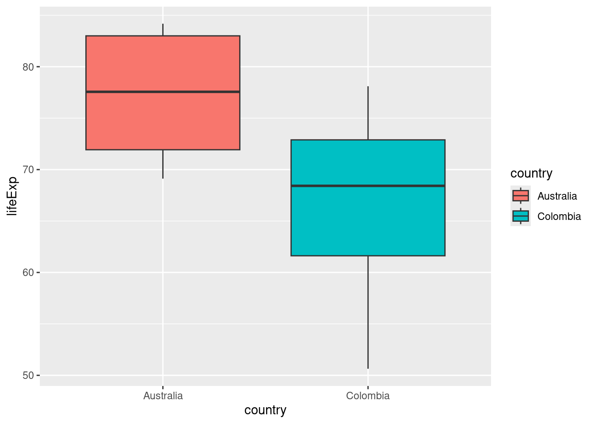
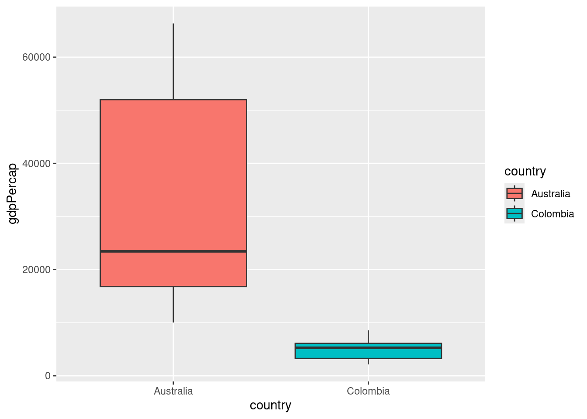

country year lifeExp gdpPercap
29 Australia 2025 84.18 66350
30 Colombia 2018 76.60 6817
31 Colombia 2019 76.80 6473
32 Colombia 2020 74.80 5340
33 Colombia 2021 72.70 5280
34 Colombia 2025 78.10 8562GDP vs Life Exp - CO vs AU comparision last 70 years
R
26Winter
data: gapminder.csv
Dataset
Selected dataset is gapminder but with 2015 to 2025 addition of Data from the World Bank Open Data
After that I make sure to charge all the libraries I used to processing the data
Then, the data was filtered to the selected countries for comparision and filtered for the relevant variables.
After that I added the new data to the set.
Context
Both countries have different socioeconomical context which implies serious differences in the data. I am focusing in a long term comparision plus focusing in something that affected all the world, being COVID-19 Pandemic.
Visualisation
Correlation between life expectancy and GDP per capita

I also transform some data to percentage to make easier comparisions through years.
Life expectancy comparision
GDP per Capita comparision
Stats
Moderate to strong correlation between economic status or capability of a country and the life expectancy of its population.
Call:
lm(formula = lifeExp ~ gdpPercap + country, data = AUvsCO_small)
Residuals:
Min 1Q Median 3Q Max
-15.981 -1.888 -0.004 3.118 9.653
Coefficients:
Estimate Std. Error t value Pr(>|t|)
(Intercept) 6.826e+01 2.646e+00 25.795 < 2e-16 ***
gdpPercap 2.841e-04 7.178e-05 3.957 0.000411 ***
countryColombia -2.247e+00 2.728e+00 -0.824 0.416472
---
Signif. codes: 0 '***' 0.001 '**' 0.01 '*' 0.05 '.' 0.1 ' ' 1
Residual standard error: 5.682 on 31 degrees of freedom
Multiple R-squared: 0.5692, Adjusted R-squared: 0.5414
F-statistic: 20.48 on 2 and 31 DF, p-value: 2.141e-06[1] 0.5692375# A tibble: 2 × 2
country correlation
<chr> <dbl>
1 Australia 0.925
2 Colombia 0.936
